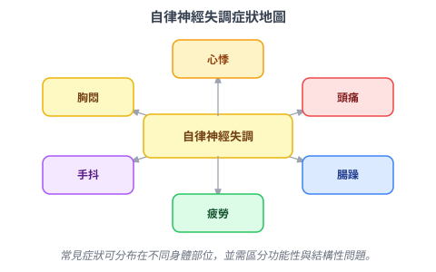
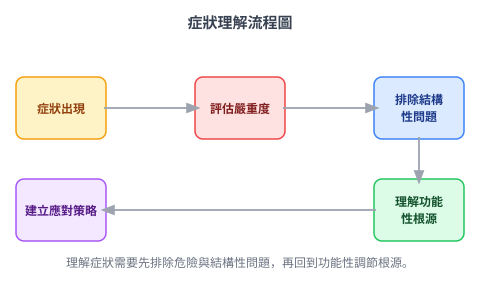

❌ 很多人以為……症狀出現就代表身體壞掉了，趕快找出是哪裡壞，修好它就對了。
但其實……症狀是身體發出的警告訊號，它不是問題本身，而是問題留下的痕跡。
阿明三十四歲，做軟體工程師，每次身體不舒服都先查Google。心跳快？搜尋「心臟病症狀」。頭痛？搜尋「腦瘤早期跡象」。手抖？搜尋「帕金森氏症多大會發作」。他的搜尋紀錄像一本病名詞典，但每次去醫院做完檢查，醫生都說「沒問題」。「沒問題」這三個字讓他更焦慮，因為他明明感覺到什麼，但被告知那個什麼不存在。
你有沒有過這樣的感覺？身體有症狀，但檢查結果一切正常。那種正常反而讓人不安——是我太敏感？是我在裝病？還是醫生漏看了什麼？
讓我們換個角度想。你家裡有煙霧偵測器，它偵測到煙就會嗚嗚大叫。這個聲音很煩，但它的工作不是「製造噪音」，它的工作是告訴你「有什麼東西在燒」。
身體的症狀就是這個道理。心悸不是心臟壞掉，它是心臟在說「現在交感神經活化了，我在配合它加速」。頭痛不一定是腦部病變，它可能是血管緊張、肌肉緊繃、或者血壓短暫起伏。慢性疲勞不是懶，是系統過載之後的耗盡狀態。
症狀是信號，不是疾病本身。把症狀當敵人，就像把煙霧偵測器的聲音當成火災——你把電池拔掉（吃止痛藥壓制），火還在燒。
傳統醫學擅長找「結構性問題」：骨頭斷了、腫瘤長了、血管堵了、指數超標了。這些東西能被照出來、量出來、切片出來。
但自律神經失調的症狀是功能性的——身體沒有壞掉，但運作方式出了問題，就像電腦的硬碟沒壞，但系統卡頓、程式一直崩潰。傳統的血液檢查、X光、心電圖，往往看不到這個層次的問題。
這不是醫生失職，也不是你在誇大。這是因為自律神經失調影響的是「調節機制」而不是「器官本身」。

這本書不是要教你自我診斷，也不是要取代就醫。它在前半段要做的事是：幫你建立一套「解讀身體語言」的基礎框架，讓你在下次身體發出訊號時，不是第一反應就是驚慌，而是能夠帶著理解去面對。
這一章是整冊的地基。接下來的每一章，我們會一個症狀一個症狀地拆解：它從哪來、為什麼發生、什麼時候要認真對待、什麼時候代表的是神經系統在表態。

這本書最好不要一次讀完。因為當你正在有某個症狀的時候，再回來讀那一章，你會有截然不同的感受——你會說「原來是這樣」而不是「好有趣的知識」。知識在有切身感的時候，才會真正被接住。
下一章，我們會從最常讓人嚇到的症狀開始：心悸——為什麼心臟在沒問題的狀況下，還是一直跳？